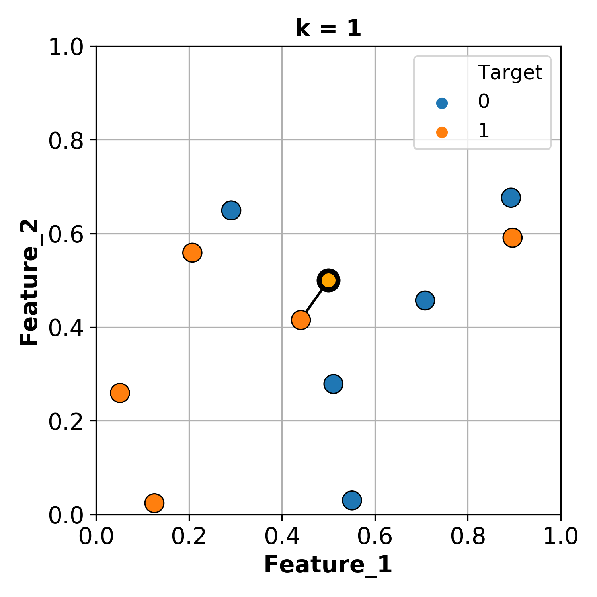
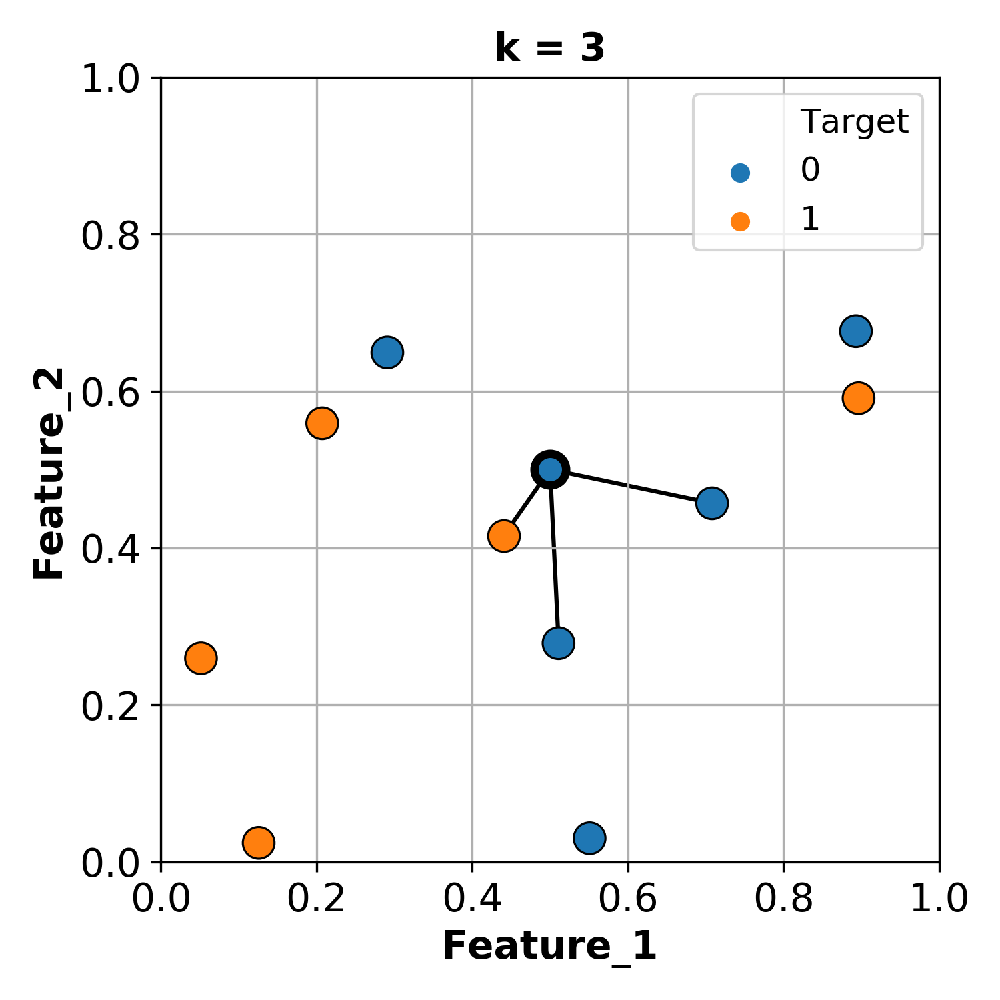
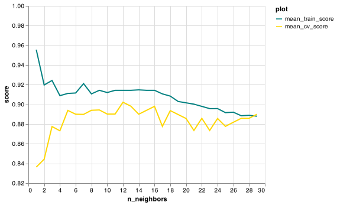

3. Baseline, k-Nearest Neighbours¶
Hayley Boyce, April 26th, 2021
# Importing our libraries
import pandas as pd
import altair as alt
import numpy as np
from sklearn.tree import DecisionTreeClassifier
from sklearn.dummy import DummyClassifier
from sklearn.neighbors import KNeighborsClassifier, KNeighborsRegressor
from sklearn.model_selection import cross_validate, train_test_split
import sys
sys.path.append('code/')
from display_tree import display_tree
from plot_classifier import plot_classifier
import matplotlib.pyplot as plt
3.1. Lecture Learning Objectives¶
Use
DummyClassifierandDummyRegressoras baselines for machine learning problems.Explain the notion of similarity-based algorithms .
Broadly describe how KNNs use distances.
Discuss the effect of using a small/large value of the hyperparameter \(K\) when using the KNN algorithm
Explain the general idea of SVMs with RBF kernel.
Describe the problem of the curse of dimensionality.
Broadly describe the relation of
gammaandChyperparameters and the fundamental tradeoff.
3.2. House Keeping¶
Assignment due Wednesday April 28th
1.7 on Assignment
rounding for Spotify
Next Assignment release (either Thursday or Monday depending on how far we get today)
Technical issues, Online resource, reaching out!
3.3. Five Minute Recap/ Lightning Questions¶
What are the 4 types of data/splits that we discussed last class?
What is the “Golden Rule of Machine Learning”?
What do we use to split our data?
If we have 6-fold cross-validation, how many times is
.fit()being called?What is overfitting?
3.3.1. Some lingering questions¶
Are decision trees the most basic model?
What other models can we build?
3.4. Baseline Models¶
We saw in the last 2 lectures how to build decision tree models which are based on rules (if-else statements), but how can we be sure that these models are doing a good job besides just accuracy?
Back in high school in chemistry or biology, we’ve all likely seen and heard of the “control group” where we have an experimental group, does not receive any experimental treatment. This control group increases the reliability of the results, often through a comparison between control measurements and the other measurements.
Our baseline model is something like a control group in the sense that it provides a way to sanity-check your machine learning model. We make baseline models not to use for prediction purposes, but as a reference point when we are building other more sophisticated models.
So what is a baseline model then?
Baseline: A simple machine learning algorithm based on simple rules of thumb. For example,
most frequent baseline: always predicts the most frequent label in the training set.
3.4.1. Dummy Classifier¶
We are going to build a most frequent baseline model which always predicts the most frequently labelled in the training set.
from sklearn.dummy import DummyClassifier
voting_df = pd.read_csv('data/cities_USA.csv', index_col=0)
voting_df.head()
| lon | lat | vote | |
|---|---|---|---|
| 1 | -80.162475 | 25.692104 | blue |
| 2 | -80.214360 | 25.944083 | blue |
| 3 | -80.094133 | 26.234314 | blue |
| 4 | -80.248086 | 26.291902 | blue |
| 5 | -81.789963 | 26.348035 | blue |
# feature table
X = voting_df.drop(columns='vote')
# the target variable
y = voting_df[['vote']]
X_train, X_test, y_train, y_test = train_test_split(
X, y, test_size=0.2, random_state=123)
We build our model, in the same way as we built a decision tree model but this time using DummyClassifier.
Since we are using a “most frequent” baseline model, we specify the argument strategy as "most_frequent"
Other options include: “stratified”, “prior”, “uniform”, “constant” but you just need to know most_frequent.
dummy_clf = DummyClassifier(strategy="most_frequent")
In the last lecture, we stated that it’s at this point that we would usually perform cross-validation.
scores = cross_validate(dummy_clf, X_train, y_train, cv=10, return_train_score=True)
scores_df = pd.DataFrame(scores)
scores_df
| fit_time | score_time | test_score | train_score | |
|---|---|---|---|---|
| 0 | 0.001024 | 0.000662 | 0.59375 | 0.576389 |
| 1 | 0.000727 | 0.000334 | 0.59375 | 0.576389 |
| 2 | 0.000992 | 0.000309 | 0.59375 | 0.576389 |
| 3 | 0.000725 | 0.000321 | 0.59375 | 0.576389 |
| 4 | 0.000698 | 0.000371 | 0.59375 | 0.576389 |
| 5 | 0.000685 | 0.000400 | 0.56250 | 0.579861 |
| 6 | 0.000634 | 0.000299 | 0.56250 | 0.579861 |
| 7 | 0.000651 | 0.000293 | 0.56250 | 0.579861 |
| 8 | 0.000696 | 0.000294 | 0.56250 | 0.579861 |
| 9 | 0.000794 | 0.000303 | 0.56250 | 0.579861 |
scores_df.mean()
fit_time 0.000763
score_time 0.000359
test_score 0.578125
train_score 0.578125
dtype: float64
With Dummy Classifiers, we won’t need to because we are not hyperparameter tuning. We are using this just to get a base training score.
dummy_clf.fit(X_train, y_train)
dummy_clf.score(X_train, y_train)
0.578125
If we see what our model predicts on the feature table for our training split X_train, our model will predict the most occurring class from our training data.
y_train.value_counts()
vote
blue 185
red 135
dtype: int64
dummy_clf.predict(X_train)
array(['blue', 'blue', 'blue', 'blue', 'blue', 'blue', 'blue', 'blue',
'blue', 'blue', 'blue', 'blue', 'blue', 'blue', 'blue', 'blue',
'blue', 'blue', 'blue', 'blue', 'blue', 'blue', 'blue', 'blue',
'blue', 'blue', 'blue', 'blue', 'blue', 'blue', 'blue', 'blue',
'blue', 'blue', 'blue', 'blue', 'blue', 'blue', 'blue', 'blue',
'blue', 'blue', 'blue', 'blue', 'blue', 'blue', 'blue', 'blue',
'blue', 'blue', 'blue', 'blue', 'blue', 'blue', 'blue', 'blue',
'blue', 'blue', 'blue', 'blue', 'blue', 'blue', 'blue', 'blue',
'blue', 'blue', 'blue', 'blue', 'blue', 'blue', 'blue', 'blue',
'blue', 'blue', 'blue', 'blue', 'blue', 'blue', 'blue', 'blue',
'blue', 'blue', 'blue', 'blue', 'blue', 'blue', 'blue', 'blue',
'blue', 'blue', 'blue', 'blue', 'blue', 'blue', 'blue', 'blue',
'blue', 'blue', 'blue', 'blue', 'blue', 'blue', 'blue', 'blue',
'blue', 'blue', 'blue', 'blue', 'blue', 'blue', 'blue', 'blue',
'blue', 'blue', 'blue', 'blue', 'blue', 'blue', 'blue', 'blue',
'blue', 'blue', 'blue', 'blue', 'blue', 'blue', 'blue', 'blue',
'blue', 'blue', 'blue', 'blue', 'blue', 'blue', 'blue', 'blue',
'blue', 'blue', 'blue', 'blue', 'blue', 'blue', 'blue', 'blue',
'blue', 'blue', 'blue', 'blue', 'blue', 'blue', 'blue', 'blue',
'blue', 'blue', 'blue', 'blue', 'blue', 'blue', 'blue', 'blue',
'blue', 'blue', 'blue', 'blue', 'blue', 'blue', 'blue', 'blue',
'blue', 'blue', 'blue', 'blue', 'blue', 'blue', 'blue', 'blue',
'blue', 'blue', 'blue', 'blue', 'blue', 'blue', 'blue', 'blue',
'blue', 'blue', 'blue', 'blue', 'blue', 'blue', 'blue', 'blue',
'blue', 'blue', 'blue', 'blue', 'blue', 'blue', 'blue', 'blue',
'blue', 'blue', 'blue', 'blue', 'blue', 'blue', 'blue', 'blue',
'blue', 'blue', 'blue', 'blue', 'blue', 'blue', 'blue', 'blue',
'blue', 'blue', 'blue', 'blue', 'blue', 'blue', 'blue', 'blue',
'blue', 'blue', 'blue', 'blue', 'blue', 'blue', 'blue', 'blue',
'blue', 'blue', 'blue', 'blue', 'blue', 'blue', 'blue', 'blue',
'blue', 'blue', 'blue', 'blue', 'blue', 'blue', 'blue', 'blue',
'blue', 'blue', 'blue', 'blue', 'blue', 'blue', 'blue', 'blue',
'blue', 'blue', 'blue', 'blue', 'blue', 'blue', 'blue', 'blue',
'blue', 'blue', 'blue', 'blue', 'blue', 'blue', 'blue', 'blue',
'blue', 'blue', 'blue', 'blue', 'blue', 'blue', 'blue', 'blue',
'blue', 'blue', 'blue', 'blue', 'blue', 'blue', 'blue', 'blue',
'blue', 'blue', 'blue', 'blue', 'blue', 'blue', 'blue', 'blue',
'blue', 'blue', 'blue', 'blue', 'blue', 'blue', 'blue', 'blue',
'blue', 'blue', 'blue', 'blue', 'blue', 'blue', 'blue', 'blue',
'blue', 'blue', 'blue', 'blue', 'blue', 'blue', 'blue', 'blue'],
dtype='<U4')
We can also now take the test score.
dummy_clf.score(X_test, y_test)
0.6125
Here is a good example of when we occasionally have test scores better than the training scores.
In this case, it’s higher because our test split has a higher proportion of observations that are of class blue and so more of them will be predicted correctly.
Now if we do a decision tree, we can say that this algorithm is doing better than a model build on this simple “most frequently” occurring model.
dt_clf = DecisionTreeClassifier()
scores = cross_validate(dt_clf, X_train, y_train, cv=10, return_train_score=True)
scores_df = pd.DataFrame(scores)
scores_df
| fit_time | score_time | test_score | train_score | |
|---|---|---|---|---|
| 0 | 0.004151 | 0.001439 | 0.84375 | 1.0 |
| 1 | 0.003474 | 0.001532 | 0.93750 | 1.0 |
| 2 | 0.004101 | 0.001669 | 0.75000 | 1.0 |
| 3 | 0.003502 | 0.001916 | 0.90625 | 1.0 |
| 4 | 0.004955 | 0.001465 | 0.96875 | 1.0 |
| 5 | 0.003908 | 0.001457 | 0.90625 | 1.0 |
| 6 | 0.004922 | 0.001558 | 0.87500 | 1.0 |
| 7 | 0.004069 | 0.001401 | 0.87500 | 1.0 |
| 8 | 0.004004 | 0.001888 | 0.87500 | 1.0 |
| 9 | 0.003664 | 0.001884 | 0.90625 | 1.0 |
scores_df.mean()
fit_time 0.004075
score_time 0.001621
test_score 0.884375
train_score 1.000000
dtype: float64
dt_clf.fit(X_train, y_train)
dt_clf.score(X_test, y_test)
0.9125
This makes us trust our model a little more.
3.4.2. Dummy Regressor¶
For a Dummy regressor, the same principles can be applied but by using different strategies.
“mean”, “median”, “quantile”, “constant”
The one we are going to become most familiar with is:
Average (mean) target value: always predicts the mean of the training set.
house_df = pd.read_csv("data/kc_house_data.csv")
house_df = house_df.drop(columns=["id", "date"])
house_df.head()
| price | bedrooms | bathrooms | sqft_living | sqft_lot | floors | waterfront | view | condition | grade | sqft_above | sqft_basement | yr_built | yr_renovated | zipcode | lat | long | sqft_living15 | sqft_lot15 | |
|---|---|---|---|---|---|---|---|---|---|---|---|---|---|---|---|---|---|---|---|
| 0 | 221900.0 | 3 | 1.00 | 1180 | 5650 | 1.0 | 0 | 0 | 3 | 7 | 1180 | 0 | 1955 | 0 | 98178 | 47.5112 | -122.257 | 1340 | 5650 |
| 1 | 538000.0 | 3 | 2.25 | 2570 | 7242 | 2.0 | 0 | 0 | 3 | 7 | 2170 | 400 | 1951 | 1991 | 98125 | 47.7210 | -122.319 | 1690 | 7639 |
| 2 | 180000.0 | 2 | 1.00 | 770 | 10000 | 1.0 | 0 | 0 | 3 | 6 | 770 | 0 | 1933 | 0 | 98028 | 47.7379 | -122.233 | 2720 | 8062 |
| 3 | 604000.0 | 4 | 3.00 | 1960 | 5000 | 1.0 | 0 | 0 | 5 | 7 | 1050 | 910 | 1965 | 0 | 98136 | 47.5208 | -122.393 | 1360 | 5000 |
| 4 | 510000.0 | 3 | 2.00 | 1680 | 8080 | 1.0 | 0 | 0 | 3 | 8 | 1680 | 0 | 1987 | 0 | 98074 | 47.6168 | -122.045 | 1800 | 7503 |
Let get our X and y objects and split our data.
X = house_df.drop(columns=["price"])
y = house_df["price"]
We still need to make sure we split our data with baseline models.
X_train, X_test, y_train, y_test = train_test_split(
X, y, test_size=0.2, random_state=123)
we need to import DummyRegressor and construct our model.
We specify strategy="mean" however this is the default value so technically we don’t need to specify this.
We train our model and again, it’s not needed to cross-validate for this type of algorithm.
from sklearn.dummy import DummyRegressor
dummy_reg = DummyRegressor(strategy="mean")
dummy_reg.fit(X_train,y_train)
DummyRegressor()
If we predict on our training data, we see it’s making the same prediction for each observation.
dummy_reg.predict(X_train)
array([539306.46784268, 539306.46784268, 539306.46784268, ...,
539306.46784268, 539306.46784268, 539306.46784268])
if we compare the mean value of the target, we see that our model is simply predicting the average of the training data which is exactly what we expect.
y_train.mean()
539306.4678426837
How well does it do?
dummy_reg.score(X_train, y_train)
0.0
We get an \(R^2\) value of 0.0.
When a model has an \(R^2\)=0 that means that the model is doing no better than a model that using the mean which is exactly the case here.
Looking at the test score we see that our model get’s a negative value.
dummy_reg.score(X_test, y_test)
-0.00010814646015933072
3.5. Let’s Practice¶
1. Below we have the output of y_train.value_counts()
Position
Forward 13
Defense 7
Goalie 2
dtype: int64
In this scenario, what would a DummyClassifier(strategy='most_frequent') model predict on the following observation:
No. Age Height Weight Experience Salary
1 83 34 191 210 11 3200000.0
2. When using a regression model, which of the following is not a possible return value from .score(X,y) ?
a) 0.0
b) 1.0
c) -0.1
d) 1.5
3. Below are the values for y that were used to train DummyRegressor(strategy='mean'):
Grade
0 75
1 80
2 90
3 95
4 85
dtype: int64
What value will the model predict for every example?
Solutions!
Forwardd) 1.5
85
3.6. Analogy-based models¶
Suppose you are given the following training examples with corresponding labels and are asked to label a given test example.
An intuitive way to classify the test example is by finding the most “similar” example(s) from the training set and using that label for the test example.

In ML, we are given X and y next, we learn a mapping function from this training data then, given a new unseen example, we predict the target of this new example using our learn-mapping function.
In the case of decision trees, we did this by asking a series of questions on some features and some thresholds on future values.
But, another intuitive way to do this is by using the notion of analogy.
3.6.1. Example:¶
Suppose we are given many images and their labels.
X = set of pictures
y = names associated with those pictures.
Then we are given a new unseen test example, a picture in this particular case.

We want to find out the label for this new test picture.
Naturally, we would try and find the most similar picture in our training set and using the label of the most similar picture as the label of this new test example.
That’s the basic idea behind analogy-based algorithms.
{kind=link}
{kind=link}
3.7. Terminology¶
In analogy-based algorithms, our goal is to come up with a way to find similarities between examples. “similarity” is a bit ambiguous so we need some terminology.
data: think of observations (rows) as points in a high dimensional space.
Each feature: Additional dimension.
{kind=link}
Above we have:
Three features; speed attack and defense.
7 points in this three-dimensional space.
Let’s go back to our Canada/USA cities dataset.
cities_df = pd.read_csv("data/canada_usa_cities.csv")
cities_train_df, cities_test_df = train_test_split(cities_df, test_size=0.2, random_state=123)
cities_train_df.head()
| longitude | latitude | country | |
|---|---|---|---|
| 160 | -76.4813 | 44.2307 | Canada |
| 127 | -81.2496 | 42.9837 | Canada |
| 169 | -66.0580 | 45.2788 | Canada |
| 188 | -73.2533 | 45.3057 | Canada |
| 187 | -67.9245 | 47.1652 | Canada |
cities_train_df.shape
(167, 3)
We have 2 features, so 2 dimensions (longitude and latitude) and 167 points.
Visualizing this in 2 dimensions gives us the following:
cities_viz = alt.Chart(cities_train_df).mark_circle(size=20, opacity=0.6).encode(
alt.X('longitude:Q', scale=alt.Scale(domain=[-140, -40])),
alt.Y('latitude:Q', scale=alt.Scale(domain=[20, 60])),
alt.Color('country:N', scale=alt.Scale(domain=['Canada', 'USA'],
range=['red', 'blue']))
)
cities_viz
What about the housing training dataset we saw?
house_df = pd.read_csv("data/kc_house_data.csv")
house_df = house_df.drop(columns=["id", "date"])
X = house_df.drop(columns=["price"])
y = house_df["price"]
house_X_train, house_X_test, house_y_train, house_y_test = train_test_split(
X, y, test_size=0.2, random_state=123)
house_X_train
| bedrooms | bathrooms | sqft_living | sqft_lot | floors | waterfront | view | condition | grade | sqft_above | sqft_basement | yr_built | yr_renovated | zipcode | lat | long | sqft_living15 | sqft_lot15 | |
|---|---|---|---|---|---|---|---|---|---|---|---|---|---|---|---|---|---|---|
| 14305 | 3 | 2.75 | 2170 | 2738 | 1.5 | 0 | 0 | 4 | 9 | 1550 | 620 | 1930 | 0 | 98109 | 47.6389 | -122.349 | 1170 | 1062 |
| 19844 | 4 | 2.75 | 3550 | 9400 | 2.0 | 0 | 0 | 3 | 9 | 3550 | 0 | 2014 | 0 | 98059 | 47.4827 | -122.131 | 3550 | 9421 |
| 2686 | 3 | 3.25 | 1210 | 1173 | 2.0 | 0 | 0 | 3 | 8 | 1000 | 210 | 2002 | 0 | 98133 | 47.7114 | -122.356 | 1650 | 1493 |
| 11926 | 3 | 2.50 | 2370 | 7875 | 2.0 | 0 | 0 | 3 | 9 | 2370 | 0 | 2003 | 0 | 98065 | 47.5427 | -121.863 | 2660 | 7752 |
| 13873 | 5 | 1.75 | 2250 | 8970 | 1.0 | 0 | 0 | 4 | 7 | 1500 | 750 | 1966 | 0 | 98034 | 47.7217 | -122.188 | 1940 | 8710 |
| ... | ... | ... | ... | ... | ... | ... | ... | ... | ... | ... | ... | ... | ... | ... | ... | ... | ... | ... |
| 15377 | 4 | 2.50 | 3440 | 14554 | 2.0 | 1 | 4 | 3 | 8 | 2170 | 1270 | 2012 | 0 | 98155 | 47.7364 | -122.286 | 3170 | 11810 |
| 21602 | 3 | 1.75 | 1500 | 11968 | 1.0 | 0 | 0 | 3 | 6 | 1500 | 0 | 2014 | 0 | 98010 | 47.3095 | -122.002 | 1320 | 11303 |
| 17730 | 2 | 1.00 | 1640 | 5200 | 1.0 | 0 | 0 | 4 | 7 | 1040 | 600 | 1937 | 0 | 98199 | 47.6426 | -122.403 | 1780 | 5040 |
| 15725 | 3 | 3.00 | 1560 | 1466 | 3.0 | 0 | 0 | 3 | 8 | 1560 | 0 | 2006 | 0 | 98103 | 47.6604 | -122.352 | 1530 | 2975 |
| 19966 | 4 | 2.50 | 2300 | 3825 | 2.0 | 0 | 0 | 3 | 7 | 2300 | 0 | 2012 | 0 | 98042 | 47.3594 | -122.082 | 2110 | 3825 |
17290 rows × 18 columns
house_X_train.shape
(17290, 18)
Notice a problem?!
We can only visualize data when the dimensions <= 3.
BUT, in ML, we usually deal with high-dimensional problems where examples are hard to visualize.
Dimensions≈20: Low dimensional
Dimensions≈1000: Medium dimensional
Dimensions≈100,000: High dimensional
3.7.1. Feature Vectors¶
Feature vector: a vector composed of feature values associated with an example.
An example feature vector from the cities dataset:
cities_train_df.drop(columns=["country"]).iloc[0].round(2).to_numpy()
array([-76.48, 44.23])
An example feature vector from the housing dataset:
house_X_train.iloc[0].round(2).to_numpy()
array([ 3.0000e+00, 2.7500e+00, 2.1700e+03, 2.7380e+03, 1.5000e+00,
0.0000e+00, 0.0000e+00, 4.0000e+00, 9.0000e+00, 1.5500e+03,
6.2000e+02, 1.9300e+03, 0.0000e+00, 9.8109e+04, 4.7640e+01,
-1.2235e+02, 1.1700e+03, 1.0620e+03])
3.8. Distance¶
We have our feature vectors, one for each observation, but how we calculate the similarity between these feature vectors?
One way to calculate the similarity between two points in high-dimensional space is by calculating the distance between them.
So, if the distance is higher, that means that the points are less similar and when the distance is smaller, that means that the points are more similar.
3.8.1. Euclidean distance¶
There are different ways to calculate distance but we are going to focus on Euclidean distance.
Euclidean distance: Euclidean distance is a measure of the true straight line distance between two points in Euclidean space. (source)
The Euclidean distance between vectors
\(u = <u_1, u_2, \dots, u_n>\) and
\(v = <v_1, v_2, \dots, v_n>\) is defined as:
\(distance(u, v) = \sqrt{\sum_{i =1}^{n} (u_i - v_i)^2}\)
Because that equation can look a bit intimidating, let’s use it in an example, particularly our Canadian/US cities data.
3.8.1.1. Calculating Euclidean distance “by hand”¶
cities_train_df.head()
| longitude | latitude | country | |
|---|---|---|---|
| 160 | -76.4813 | 44.2307 | Canada |
| 127 | -81.2496 | 42.9837 | Canada |
| 169 | -66.0580 | 45.2788 | Canada |
| 188 | -73.2533 | 45.3057 | Canada |
| 187 | -67.9245 | 47.1652 | Canada |
And here is our 2-dimensional space with the observations as points.
cities_viz
Let’s take 2 points (two feature vectors) from the cities dataset.
two_cities = cities_df.sample(2, random_state=42).drop(columns=["country"])
two_cities
| longitude | latitude | |
|---|---|---|
| 30 | -66.9843 | 44.8607 |
| 171 | -80.2632 | 43.1408 |
The two sampled points are shown as black circles.
Our goal is to find how similar these two points are.
cities_viz + alt.Chart(two_cities).mark_circle(size=130, color='black').encode(alt.X('longitude'), alt.Y('latitude'))
First, we subtract these two cities. We are subtracting the city at index 0 from the city at index 1.
two_cities.iloc[1] - two_cities.iloc[0]
longitude -13.2789
latitude -1.7199
dtype: float64
Next, we square the differences.
(two_cities.iloc[1] - two_cities.iloc[0])**2
longitude 176.329185
latitude 2.958056
dtype: float64
Then we sum up the squared differences.
((two_cities.iloc[1] - two_cities.iloc[0])**2).sum()
179.28724121999983
And then take the square root of the value.
np.sqrt(np.sum((two_cities.iloc[1] - two_cities.iloc[0])**2))
13.389818565611703
We end with a value of 13.3898 which is the distance between the two cities.
3.8.1.2. Calculating Euclidean distance with sklearn¶
That’s more work than we really have time for and since sklearn knows we are very busy people, they have a function that does this for us.
# Euclidean distance using sklearn
from sklearn.metrics.pairwise import euclidean_distances
euclidean_distances(two_cities)
array([[ 0. , 13.38981857],
[13.38981857, 0. ]])
When we call this function on our two cities data, it outputs this matrix with four values.
Our first value is the distance between city 0 and itself.
Our second value is the distance between city 0 and city1.
Our third value is the distance between city 1and city 0.
Our fourth value is the distance between city 1 and itself.
As we can see, the distances are symmetric. If we calculate the distance between city 0 and city1, it’s going to have the same value as if we calculated the distance between city 1 and city 0.
This isn’t always the case if we use a different metric to calculate distances.
3.9. Finding the Nearest Neighbour¶
Now that we know how to calculate the distance between two points, we are ready to find the most similar examples.
Let’s find the closest cities to City 0 from our cities_train_df dataframe.
Using euclidean_distances on the entire dataset will calculate the distances from all the cities to all other cities in our dataframe.
dists = euclidean_distances(cities_train_df[["latitude", "longitude"]])
dists
array([[ 0. , 4.92866046, 10.47586257, ..., 45.36619339,
3.13968038, 9.58476504],
[ 4.92866046, 0. , 15.36399019, ..., 40.48484175,
1.80868018, 14.45684087],
[10.47586257, 15.36399019, 0. , ..., 55.83947468,
13.60621684, 0.94361393],
...,
[45.36619339, 40.48484175, 55.83947468, ..., 0. ,
42.23325838, 54.93872568],
[ 3.13968038, 1.80868018, 13.60621684, ..., 42.23325838,
0. , 12.70774745],
[ 9.58476504, 14.45684087, 0.94361393, ..., 54.93872568,
12.70774745, 0. ]])
This is going to be of shape 167 by 167 as this was the number of examples in our training portion.
Each row here gives us the distance of that particular city to all other cities in the training data.
dists.shape
(167, 167)
pd.DataFrame(dists)
| 0 | 1 | 2 | 3 | 4 | 5 | 6 | 7 | 8 | 9 | ... | 157 | 158 | 159 | 160 | 161 | 162 | 163 | 164 | 165 | 166 | |
|---|---|---|---|---|---|---|---|---|---|---|---|---|---|---|---|---|---|---|---|---|---|
| 0 | 0.000000 | 4.928660 | 10.475863 | 3.402295 | 9.046000 | 44.329135 | 31.525721 | 3.212817 | 8.167347 | 26.529757 | ... | 0.180478 | 39.498997 | 46.632397 | 9.154090 | 46.632397 | 0.183869 | 1.921478 | 45.366193 | 3.139680 | 9.584765 |
| 1 | 4.928660 | 0.000000 | 15.363990 | 8.326614 | 13.965788 | 39.839439 | 26.601406 | 2.099390 | 4.686255 | 21.937558 | ... | 5.097647 | 34.577431 | 42.060108 | 14.063632 | 42.060108 | 5.049876 | 6.830969 | 40.484842 | 1.808680 | 14.456841 |
| 2 | 10.475863 | 15.363990 | 0.000000 | 7.195350 | 2.653738 | 54.549042 | 41.853597 | 13.661189 | 18.304496 | 36.104309 | ... | 10.299402 | 49.928916 | 56.925712 | 1.397385 | 56.925712 | 10.337038 | 8.674609 | 55.839475 | 13.606217 | 0.943614 |
| 3 | 3.402295 | 8.326614 | 7.195350 | 0.000000 | 5.643921 | 47.391337 | 34.926888 | 6.501805 | 11.133646 | 29.822103 | ... | 3.239187 | 42.880277 | 49.747776 | 5.833864 | 49.747776 | 3.295760 | 1.503112 | 48.707466 | 6.527458 | 6.347179 |
| 4 | 9.046000 | 13.965788 | 2.653738 | 5.643921 | 0.000000 | 52.532333 | 40.567164 | 12.088727 | 16.408137 | 35.345303 | ... | 8.883025 | 48.487730 | 54.961957 | 1.674158 | 54.961957 | 8.938714 | 7.134836 | 54.253225 | 12.162108 | 2.483804 |
| ... | ... | ... | ... | ... | ... | ... | ... | ... | ... | ... | ... | ... | ... | ... | ... | ... | ... | ... | ... | ... | ... |
| 162 | 0.183869 | 5.049876 | 10.337038 | 3.295760 | 8.938714 | 44.493704 | 31.639843 | 3.370041 | 8.341824 | 26.596728 | ... | 0.090157 | 39.625372 | 46.793616 | 9.021147 | 46.793616 | 0.000000 | 1.833858 | 45.502887 | 3.270795 | 9.442309 |
| 163 | 1.921478 | 6.830969 | 8.674609 | 1.503112 | 7.134836 | 45.960223 | 33.432373 | 5.001225 | 9.708835 | 28.425488 | ... | 1.768291 | 41.377557 | 48.300994 | 7.323990 | 48.300994 | 1.833858 | 0.000000 | 47.206600 | 5.028487 | 7.810194 |
| 164 | 45.366193 | 40.484842 | 55.839475 | 48.707466 | 54.253225 | 12.149226 | 15.249886 | 42.205693 | 38.013270 | 24.755170 | ... | 45.541763 | 6.789646 | 10.695838 | 54.518494 | 10.695838 | 45.502887 | 47.206600 | 0.000000 | 42.233258 | 54.938726 |
| 165 | 3.139680 | 1.808680 | 13.606217 | 6.527458 | 12.162108 | 41.375773 | 28.405702 | 0.756038 | 5.558903 | 23.675006 | ... | 3.312655 | 36.359838 | 43.637580 | 12.291750 | 43.637580 | 3.270795 | 5.028487 | 42.233258 | 0.000000 | 12.707747 |
| 166 | 9.584765 | 14.456841 | 0.943614 | 6.347179 | 2.483804 | 53.731902 | 40.924593 | 12.780661 | 17.476788 | 35.161267 | ... | 9.407212 | 49.012123 | 56.094462 | 0.842200 | 56.094462 | 9.442309 | 7.810194 | 54.938726 | 12.707747 | 0.000000 |
167 rows × 167 columns
The distance of each city to itself is going to be zero.
If we don’t replace 0 with infinity, each city’s most similar city is going to be itself which is not useful.
np.fill_diagonal(dists, np.inf)
pd.DataFrame(dists)
| 0 | 1 | 2 | 3 | 4 | 5 | 6 | 7 | 8 | 9 | ... | 157 | 158 | 159 | 160 | 161 | 162 | 163 | 164 | 165 | 166 | |
|---|---|---|---|---|---|---|---|---|---|---|---|---|---|---|---|---|---|---|---|---|---|
| 0 | inf | 4.928660 | 10.475863 | 3.402295 | 9.046000 | 44.329135 | 31.525721 | 3.212817 | 8.167347 | 26.529757 | ... | 0.180478 | 39.498997 | 46.632397 | 9.154090 | 46.632397 | 0.183869 | 1.921478 | 45.366193 | 3.139680 | 9.584765 |
| 1 | 4.928660 | inf | 15.363990 | 8.326614 | 13.965788 | 39.839439 | 26.601406 | 2.099390 | 4.686255 | 21.937558 | ... | 5.097647 | 34.577431 | 42.060108 | 14.063632 | 42.060108 | 5.049876 | 6.830969 | 40.484842 | 1.808680 | 14.456841 |
| 2 | 10.475863 | 15.363990 | inf | 7.195350 | 2.653738 | 54.549042 | 41.853597 | 13.661189 | 18.304496 | 36.104309 | ... | 10.299402 | 49.928916 | 56.925712 | 1.397385 | 56.925712 | 10.337038 | 8.674609 | 55.839475 | 13.606217 | 0.943614 |
| 3 | 3.402295 | 8.326614 | 7.195350 | inf | 5.643921 | 47.391337 | 34.926888 | 6.501805 | 11.133646 | 29.822103 | ... | 3.239187 | 42.880277 | 49.747776 | 5.833864 | 49.747776 | 3.295760 | 1.503112 | 48.707466 | 6.527458 | 6.347179 |
| 4 | 9.046000 | 13.965788 | 2.653738 | 5.643921 | inf | 52.532333 | 40.567164 | 12.088727 | 16.408137 | 35.345303 | ... | 8.883025 | 48.487730 | 54.961957 | 1.674158 | 54.961957 | 8.938714 | 7.134836 | 54.253225 | 12.162108 | 2.483804 |
| ... | ... | ... | ... | ... | ... | ... | ... | ... | ... | ... | ... | ... | ... | ... | ... | ... | ... | ... | ... | ... | ... |
| 162 | 0.183869 | 5.049876 | 10.337038 | 3.295760 | 8.938714 | 44.493704 | 31.639843 | 3.370041 | 8.341824 | 26.596728 | ... | 0.090157 | 39.625372 | 46.793616 | 9.021147 | 46.793616 | inf | 1.833858 | 45.502887 | 3.270795 | 9.442309 |
| 163 | 1.921478 | 6.830969 | 8.674609 | 1.503112 | 7.134836 | 45.960223 | 33.432373 | 5.001225 | 9.708835 | 28.425488 | ... | 1.768291 | 41.377557 | 48.300994 | 7.323990 | 48.300994 | 1.833858 | inf | 47.206600 | 5.028487 | 7.810194 |
| 164 | 45.366193 | 40.484842 | 55.839475 | 48.707466 | 54.253225 | 12.149226 | 15.249886 | 42.205693 | 38.013270 | 24.755170 | ... | 45.541763 | 6.789646 | 10.695838 | 54.518494 | 10.695838 | 45.502887 | 47.206600 | inf | 42.233258 | 54.938726 |
| 165 | 3.139680 | 1.808680 | 13.606217 | 6.527458 | 12.162108 | 41.375773 | 28.405702 | 0.756038 | 5.558903 | 23.675006 | ... | 3.312655 | 36.359838 | 43.637580 | 12.291750 | 43.637580 | 3.270795 | 5.028487 | 42.233258 | inf | 12.707747 |
| 166 | 9.584765 | 14.456841 | 0.943614 | 6.347179 | 2.483804 | 53.731902 | 40.924593 | 12.780661 | 17.476788 | 35.161267 | ... | 9.407212 | 49.012123 | 56.094462 | 0.842200 | 56.094462 | 9.442309 | 7.810194 | 54.938726 | 12.707747 | inf |
167 rows × 167 columns
Now let’s look at the distance between city 0 and some other cities.
We can look at city 0 with its respective longitude and latitude values.
cities_train_df.iloc[[0]]
| longitude | latitude | country | |
|---|---|---|---|
| 160 | -76.4813 | 44.2307 | Canada |
And the distances from city 0 to the other cities in the training dataset.
dists[0]
array([ inf, 4.92866046, 10.47586257, 3.40229467, 9.04600003,
44.32913545, 31.52572108, 3.21281701, 8.16734667, 26.52975665,
5.36451793, 17.47354208, 9.25235538, 46.65300827, 12.91711643,
8.73732272, 21.41984759, 46.10101237, 11.38925694, 8.45258153,
3.29603996, 12.90216965, 25.43541008, 2.57167487, 35.80191816,
54.77569987, 2.77064993, 4.74762925, 21.11653758, 46.84711517,
18.63306299, 42.68410294, 21.26505054, 46.58691036, 23.62784332,
4.45224202, 4.47636916, 36.52381145, 9.25295786, 6.83445279,
3.32357247, 8.16734667, 31.19662805, 7.79242035, 1.42424148,
23.99849627, 38.17792497, 4.94149717, 21.5518279 , 9.51787313,
38.19275017, 37.97055885, 2.97880445, 9.51483002, 37.1901251 ,
54.83532899, 1.28350735, 10.0044146 , 3.28029451, 45.92971431,
11.01430039, 3.19225293, 46.38943202, 2.96693525, 9.04600003,
35.80001702, 2.76505999, 3.07231406, 36.96774058, 38.19559327,
3.10919556, 7.39488827, 2.95943349, 11.50351059, 3.93684711,
42.2793155 , 9.14918312, 6.83445279, 46.91610836, 43.38757936,
3.5288519 , 46.38746533, 3.93581626, 2.96373905, 21.27058643,
18.66494501, 26.50025275, 6.82764827, 4.7396424 , 9.9874779 ,
6.83549241, 13.13067545, 46.50627115, 26.49966844, 28.81491391,
45.97271218, 46.90321547, 5.73649067, 59.62262041, 1.09761148,
6.08870392, 5.73454545, 46.21089504, 9.03328701, 7.92447701,
23.80155222, 47.07123507, 8.73468637, 2.74816746, 3.07662193,
3.22855068, 3.63284771, 19.68277227, 2.82337311, 3.43691007,
7.93860597, 46.85396601, 16.3288186 , 46.23882897, 43.94670281,
28.85319232, 2.91163454, 2.88081958, 16.80079704, 23.7934676 ,
3.9286773 , 2.86603875, 3.32357247, 1.07865087, 8.4376414 ,
6.82764827, 3.0717763 , 4.45272866, 9.11228649, 4.08772282,
2.86603875, 34.6881178 , 1.8400926 , 3.03326165, 23.32224009,
46.10101237, 46.83865522, 22.78600867, 28.85530775, 18.81002995,
46.69549579, 13.44345687, 17.34527477, 6.75905672, 5.89141512,
3.13784784, 3.47624672, 42.98365051, 43.00228242, 10.65641958,
3.80625889, 1.42924216, 0.18047839, 39.49899714, 46.63239678,
9.15409025, 46.63239678, 0.18386865, 1.92147809, 45.36619339,
3.13968038, 9.58476504])
Remember that our goal is to find the closest example to city 0.
We can find the closest city to city 0 by finding the city with the minimum distance.
np.argmin(dists[0])
157
The closest city in the training dataset is the city with index 157.
This corresponds to index 96 from the original dataset before shuffling.
cities_train_df.iloc[[157]]
| longitude | latitude | country | |
|---|---|---|---|
| 96 | -76.3019 | 44.211 | Canada |
If we look at the longitude and latitude values for the city at index 157 (labelled 96), they look pretty close to those of city 0.
cities_train_df.iloc[[0]]
| longitude | latitude | country | |
|---|---|---|---|
| 160 | -76.4813 | 44.2307 | Canada |
dists[0][157]
0.1804783920605758
So, in this case, the closest city to city 0 is city 157 and the Euclidean distance between the two cities is 0.184.
3.9.1. Nearest city to a query point¶
We can also find the distances to a new “test” or “query” city:
query_point = [[-80, 25]]
dists = euclidean_distances(cities_train_df[["longitude", "latitude"]], query_point)
dists[0:10]
array([[19.54996348],
[18.02706204],
[24.60912622],
[21.39718237],
[25.24111312],
[47.81750619],
[28.49499735],
[19.39177482],
[21.95316686],
[19.01698738]])
We can find the city closest to the query point (-80, 25) using:
np.argmin(dists)
147
dists[np.argmin(dists)]
array([3.83839229])
So the city at index 147 is the closest point to (-80, 25) with the Euclidean distance between the two equal to 3.838
We can also use Sklearn’s NearestNeighbors function to get the closest example and the distance between the query point and the closest example.
from sklearn.neighbors import NearestNeighbors
nn = NearestNeighbors(n_neighbors=1)
nn.fit(cities_train_df[['longitude', 'latitude']]);
nn.kneighbors([[-80, 25]])
(array([[3.83839229]]), array([[147]]))
We can also use kneighbors to find the 5 nearest cities in the training split to one of the cities in the test split.
cities_test_X = cities_test_df[['longitude', 'latitude']]
nn = NearestNeighbors(n_neighbors=5)
nn.fit(cities_train_df[['longitude', 'latitude']]);
nn.kneighbors(cities_test_X.iloc[1])
---------------------------------------------------------------------------
ValueError Traceback (most recent call last)
<ipython-input-55-aa1385389c22> in <module>
3 nn = NearestNeighbors(n_neighbors=5)
4 nn.fit(cities_train_df[['longitude', 'latitude']]);
----> 5 nn.kneighbors(cities_test_X.iloc[1])
/usr/local/lib/python3.8/site-packages/sklearn/neighbors/_base.py in kneighbors(self, X, n_neighbors, return_distance)
604 X = _check_precomputed(X)
605 else:
--> 606 X = check_array(X, accept_sparse='csr')
607 else:
608 query_is_train = True
/usr/local/lib/python3.8/site-packages/sklearn/utils/validation.py in inner_f(*args, **kwargs)
70 FutureWarning)
71 kwargs.update({k: arg for k, arg in zip(sig.parameters, args)})
---> 72 return f(**kwargs)
73 return inner_f
74
/usr/local/lib/python3.8/site-packages/sklearn/utils/validation.py in check_array(array, accept_sparse, accept_large_sparse, dtype, order, copy, force_all_finite, ensure_2d, allow_nd, ensure_min_samples, ensure_min_features, estimator)
617 # If input is 1D raise error
618 if array.ndim == 1:
--> 619 raise ValueError(
620 "Expected 2D array, got 1D array instead:\narray={}.\n"
621 "Reshape your data either using array.reshape(-1, 1) if "
ValueError: Expected 2D array, got 1D array instead:
array=[-82.4066 42.9746].
Reshape your data either using array.reshape(-1, 1) if your data has a single feature or array.reshape(1, -1) if it contains a single sample.
We need to be careful here though because we need to make sure we pass in a 2D NumPy array as an input. This can be fixed using 2 sets of square brackets with our city.
nn.kneighbors(cities_test_X.iloc[[1]])
(array([[0.03461517, 0.90722048, 0.90722048, 0.90970871, 0.90970871]]),
array([[100, 77, 39, 130, 87]]))
This now shows us the 5 distances to the 5 closest cities and their index.
3.10. Let’s Practice¶
seeds shape sweetness water-content weight fruit_veg
0 1 0 35 84 100 fruit
1 0 0 23 75 120 fruit
2 1 1 15 90 1360 veg
3 1 1 7 96 600 veg
4 0 0 37 80 5 fruit
5 0 0 45 78 40 fruit
6 1 0 27 83 450 veg
7 1 1 18 73 5 veg
8 1 1 32 80 76 veg
9 0 0 40 83 65 fruit
1. Giving the table above and that we are trying to predict if each example is either a fruit or a vegetable, what would be the dimension of feature vectors in this problem?
2. Which of the following would be the feature vector for example 0.
a) array([1, 0, 1, 1, 0, 0, 1, 1, 1, 0])
b) array([fruit, fruit, veg, veg, fruit, fruit, veg, veg, veg, fruit])
c) array([1, 0, 35, 84, 100])
d) array([1, 0, 35, 84, 100, fruit])
3. Given the following 2 feature vectors, what is the Euclidean distance between the following two feature vectors?
u = np.array([5, 0, 22, -11])
v = np.array([-1, 0, 19, -9])
True or False
4. Analogy-based models find examples from the test set that are most similar to the test example we are predicting.
5. Feature vectors can only be of length 3 since we cannot visualize past that.
6. A dataset with 10 dimensions is considered low dimensional.
7. Euclidean distance will always have a positive value.
8. When finding the nearest neighbour in a dataset using kneighbors() from the sklearn library, we must fit the data first.
9. Calculating the distances between an example and a query point takes twice as long as calculating the distances between two examples.
Solutions!
5 dimensions.
c)
array([1, 0, 35, 84, 100])7
False
False
True
True
True (0 and positive)
False
3.11. \(k\) -Nearest Neighbours (\(k\)-NNs) Classifier¶
Now that we have learned how to find similar examples, can we use this idea in a predictive model?
Yes! The k Nearest Neighbors (kNN) algorithm
This is a fairly simple algorithm that is best understood by example
{kind=link}
We have two features in our toy example; feature 1 and feature 2.
We have two targets; 0 represented with blue points and 1 represented with orange points.
We want to predict the point in gray.
Based on what we have been doing so far, we can find the closest example (\(k\)=1) to this gray point and use its class as the class for our grey point.
In this particular case, we will predict orange as the class for our query point.
{kind=link}
What if we consider more than one nearest example and let them vote on the target of the query example.
Let’s consider the nearest 3 neighbours and let them vote.
{kind=link}
Let’s try this with a smaller set of our data and sklearn.
small_train_df = cities_train_df.sample(30, random_state=1223)
small_X_train = small_train_df.drop(columns=["country"])
small_y_train = small_train_df["country"]
one_city = cities_test_df.sample(1, random_state=33)
one_city
| longitude | latitude | country | |
|---|---|---|---|
| 195 | -122.7454 | 53.9129 | Canada |
chart_knn = alt.Chart(small_train_df).mark_circle().encode(
alt.X('longitude', scale=alt.Scale(domain=[-140, -40])),
alt.Y('latitude', scale=alt.Scale(domain=[20, 60])),
alt.Color('country', scale=alt.Scale(domain=['Canada', 'USA'], range=['red', 'blue'])))
one_city_point = alt.Chart(one_city).mark_point(
shape='triangle-up', size=400, fill='darkgreen', opacity=1).encode(
alt.X('longitude'),
alt.Y('latitude')
)
chart_knn + one_city_point
We want to find the class for this green triangle city.
from sklearn.neighbors import KNeighborsClassifier
neigh_clf = KNeighborsClassifier(n_neighbors=1)
neigh_clf.fit(small_X_train, small_y_train)
neigh_clf.predict(one_city.drop(columns=["country"]))
array(['Canada'], dtype=object)
We can set n_neighbors equal to 1 to classify this triangle based on one neighbouring point.
Our prediction here is Canada since the closest point to the green triangle is a city with the class “Canada”.
Now, what if we consider the nearest 3 neighbours?
neigh_clf = KNeighborsClassifier(n_neighbors=3)
neigh_clf.fit(small_X_train, small_y_train)
neigh_clf.predict(one_city.drop(columns=["country"]))
array(['USA'], dtype=object)
When we change our model to consider the nearest 3 neighbours, our prediction changes!
It now predicts “USA” since the majority of the 3 nearest points are “USA” cities.
Let’s use our entire training dataset and calculate our training and validation scores
cities_X_train = cities_train_df.drop(columns=['country'])
cities_y_train = cities_train_df['country']
cities_X_test = cities_test_df.drop(columns=['country'])
cities_y_test = cities_test_df['country']
kn1_model = KNeighborsClassifier(n_neighbors=1)
scores = cross_validate(kn1_model, cities_X_train, cities_y_train, cv=10, return_train_score=True)
scores_df = pd.DataFrame(scores)
scores_df
| fit_time | score_time | test_score | train_score | |
|---|---|---|---|---|
| 0 | 0.002669 | 0.003742 | 0.823529 | 1.0 |
| 1 | 0.002752 | 0.002895 | 0.705882 | 1.0 |
| 2 | 0.002319 | 0.002516 | 0.647059 | 1.0 |
| 3 | 0.002101 | 0.002405 | 0.941176 | 1.0 |
| 4 | 0.002126 | 0.002730 | 0.823529 | 1.0 |
| 5 | 0.003362 | 0.002801 | 0.588235 | 1.0 |
| 6 | 0.001995 | 0.002371 | 0.647059 | 1.0 |
| 7 | 0.002155 | 0.003227 | 0.812500 | 1.0 |
| 8 | 0.002191 | 0.002434 | 0.937500 | 1.0 |
| 9 | 0.002243 | 0.002479 | 0.750000 | 1.0 |
scores_df.mean()
fit_time 0.002391
score_time 0.002760
test_score 0.767647
train_score 1.000000
dtype: float64
3.12. Choosing K¶
Ok, so we saw our validation and training scores for n_neighbors =1. What happens when we change that?
kn90_model = KNeighborsClassifier(n_neighbors=90)
scores_df = pd.DataFrame(cross_validate(kn90_model, cities_X_train, cities_y_train, cv=10, return_train_score=True))
scores_df
| fit_time | score_time | test_score | train_score | |
|---|---|---|---|---|
| 0 | 0.003470 | 0.003227 | 0.705882 | 0.620000 |
| 1 | 0.002318 | 0.002933 | 0.588235 | 0.620000 |
| 2 | 0.001890 | 0.002301 | 0.588235 | 0.633333 |
| 3 | 0.001836 | 0.002223 | 0.588235 | 0.606667 |
| 4 | 0.001801 | 0.002955 | 0.588235 | 0.620000 |
| 5 | 0.001702 | 0.002397 | 0.588235 | 0.633333 |
| 6 | 0.002265 | 0.002482 | 0.647059 | 0.700000 |
| 7 | 0.001925 | 0.002901 | 0.625000 | 0.629139 |
| 8 | 0.002337 | 0.002940 | 0.687500 | 0.622517 |
| 9 | 0.001635 | 0.002180 | 0.625000 | 0.629139 |
scores_df.mean()
fit_time 0.002118
score_time 0.002654
test_score 0.623162
train_score 0.631413
dtype: float64
Comparing this with the results of n_neighbors=1 we see that we went from overfitting to underfitting.
Let’s look at the decision boundaries now.
plt.figure(figsize=(16, 8))
plt.subplot(1, 2, 1)
kn1_model.fit(cities_X_train, cities_y_train);
plt.title("n_neighbors = 1")
plt.ylabel("latitude")
plt.xlabel("longitude")
plot_classifier(cities_X_train, cities_y_train, kn1_model, ax=plt.gca(), ticks=True)
plt.subplot(1, 2, 2)
plt.title("n_neighbors = 90")
kn90_model.fit(cities_X_train, cities_y_train);
plt.ylabel("latitude")
plt.xlabel("longitude")
plot_classifier(cities_X_train, cities_y_train, kn90_model, ax=plt.gca(), ticks=True)
<AxesSubplot:title={'center':'n_neighbors = 90'}, xlabel='longitude', ylabel='latitude'>
If we plot these two models with \(k=1\) on the left and \(k=90\) on the right.
The left plot shows a much more complex model where it is much more specific and attempts to get every example correct.
The plot on right is plotting a simpler model and we can see more training examples are being predicted incorrectly.
3.12.1. How to choose \(K\) (n_neighbors)?¶
So we saw the model was overfitting with \(k\)=1 and when \(k\)=100, the model was underfitting.
So, the question is how do we pick \(k\)?
Since \(k\) is a hyperparameter (
n_neighborsinsklearn), we can use hyperparameter optimization to choose \(k\).
Here we are looping over different values of \(k\) and performing cross-validation on each one.
results_dict = {"n_neighbors": list(), "mean_train_score": list(), "mean_cv_score": list()}
for k in range(1,50,5):
knn = KNeighborsClassifier(n_neighbors=k)
scores = cross_validate(knn, cities_X_train, cities_y_train, cv=10, return_train_score = True)
results_dict["n_neighbors"].append(k)
results_dict["mean_cv_score"].append(np.mean(scores["test_score"]))
results_dict["mean_train_score"].append(np.mean(scores["train_score"]))
results_df = pd.DataFrame(results_dict)
results_df
| n_neighbors | mean_train_score | mean_cv_score | |
|---|---|---|---|
| 0 | 1 | 1.000000 | 0.767647 |
| 1 | 6 | 0.841660 | 0.785662 |
| 2 | 11 | 0.823051 | 0.811029 |
| 3 | 16 | 0.807726 | 0.793382 |
| 4 | 21 | 0.777810 | 0.756985 |
| 5 | 26 | 0.765854 | 0.739338 |
| 6 | 31 | 0.758525 | 0.738971 |
| 7 | 36 | 0.738583 | 0.720221 |
| 8 | 41 | 0.725912 | 0.726471 |
| 9 | 46 | 0.733916 | 0.713971 |
plotting_source = results_df.melt(id_vars='n_neighbors',
value_vars=['mean_train_score', 'mean_cv_score'],
var_name='score_type' ,
value_name= 'accuracy' )
K_plot = alt.Chart(plotting_source, width=500, height=300).mark_line().encode(
alt.X('n_neighbors:Q'),
alt.Y('accuracy:Q', scale=alt.Scale(domain=[.67, 1.00])),
alt.Color('score_type:N')
).properties(title="Accuracies of n_neighbors for KNeighborsClassifier")
K_plot
Looking at this graph with k on the x-axis and accuracy on the y-axis, we can see there is a sweet spot where the gap between the validation and training scores is the lowest and cross-validation score is the highest. Here it’s when n_neighbors is 11.
How do I know it’s 11? Here’s how!
results_df.sort_values("mean_cv_score", ascending = False)
| n_neighbors | mean_train_score | mean_cv_score | |
|---|---|---|---|
| 2 | 11 | 0.823051 | 0.811029 |
| 3 | 16 | 0.807726 | 0.793382 |
| 1 | 6 | 0.841660 | 0.785662 |
| 0 | 1 | 1.000000 | 0.767647 |
| 4 | 21 | 0.777810 | 0.756985 |
| 5 | 26 | 0.765854 | 0.739338 |
| 6 | 31 | 0.758525 | 0.738971 |
| 8 | 41 | 0.725912 | 0.726471 |
| 7 | 36 | 0.738583 | 0.720221 |
| 9 | 46 | 0.733916 | 0.713971 |
knn = KNeighborsClassifier(n_neighbors=11)
knn.fit(cities_X_train, cities_y_train);
print("Test accuracy:", round(knn.score(cities_X_test, cities_y_test), 3))
Test accuracy: 0.857
This testing accuracy surprisingly higher than the validation mean accuracy we had earlier.
This could be due to having a small dataset.
3.13. Curse of Dimensionality¶
\(k\) -NN usually works well when the number of dimensions is small.
In the previous module, we discussed one of the most important problems in machine learning which was overfitting the second most important problem in machine learning is the curse of dimensionality.
If there are many irrelevant features, \(k\)-NN is hopelessly confused because all of them contribute to finding similarities between examples.
With enough irrelevant features, the accidental similarity between features wips out any meaningful similarity and \(k\)-NN becomes is no better than random guessing.
3.14. Let’s Practice¶
Consider this toy dataset:
What would you predict for \(x=\begin{bmatrix} 0\\0\end{bmatrix}\):
1. If \(k=1\)?
2. If \(k=3\)?
True or False
3. The classification of the closest neighbour to the test example always contributes the most to the prediction.
4. The n_neighbors hyperparameter must be less than the number of examples in the training set.
5. Similar to decision trees, \(k\)-NNs find a small set of good features.
6. With \(k\) -NN, setting the hyperparameter \(k\) to larger values typically increases training score.
7. \(k\)-NN may perform poorly in high-dimensional space (say, d > 100)
Consider this graph:
{kind=link}
8. What value of n_neighbors would you choose to train your model on?
Solutions!
1
0
False
True
False
False
True
12
3.15. What We’ve Learned Today¶
The concept of baseline models.
How to initiate a Dummy Classifier and Regressor.
How to measure Euclidean distance.
How the \(k\)NN algorithm works for classification.
How changing \(k\) (
n_neighbors) affects a model.What the curse of dimensionality is.